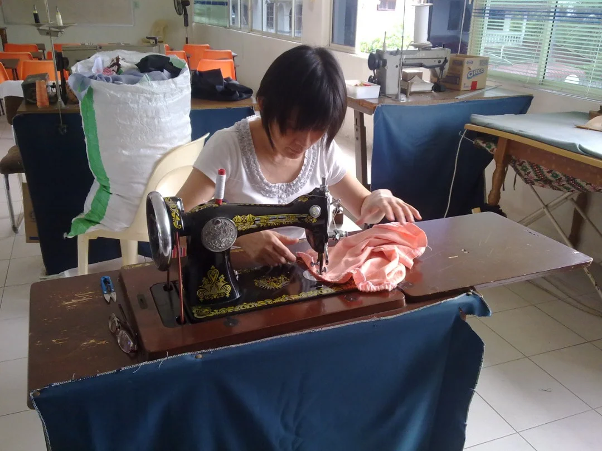
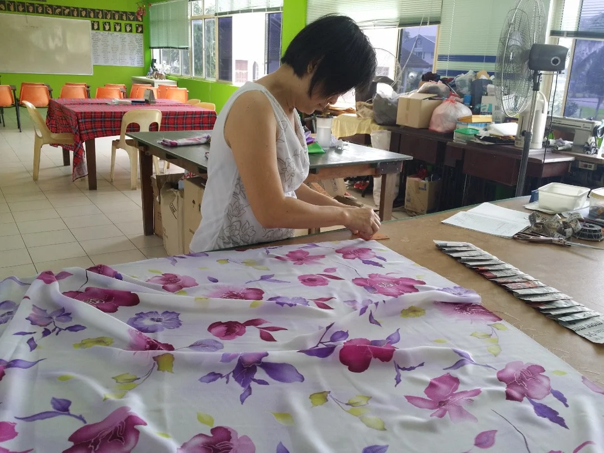

Sewing and Alteration
Deaf hands create threads of perfection in the art of sewing and alteration
Within the vibrant tapestry of the deaf community, we offer specialized services like sewing and alteration. Here, skilled hands transform fabrics into bespoke treasures, embodying the unique craftsmanship and inclusivity that define our community's spirit. Experience the art of tailoring, where every stitch tells a story of empowerment and creativity.

Diverse Avenues for Deaf Artisans and Their Creative Productions
- Items can be made as donations for charity fundraising events to support activities and projects within the deaf community.
- Products can be used as personal clothing, accessories, and home goods, fulfilling individual lifestyle and decoration needs.
- Products can be sold in stores, markets, or online platforms.
- Products can be given as gifts to friends, family, or colleagues to express care and blessings.
- Products can be showcased as creative works in art exhibitions, fashion shows, or handicraft markets, showcasing the creativity and skills of the deaf community.

Clothing Items You Can Alter:
Our alteration services are provided to a wide range of clothing items, ensuring that every piece in your wardrobe fits you flawlessly.
- Dress
- Jackets
- Pants / Jeans
- Shirt / Blouses
- Skirts
If you have specific questions related to alteration or want to alter other garment types not listed here, do reach out to our team for more information.
Inspiring Tales from Around the Globe
Join us to know more about the Deaf community!